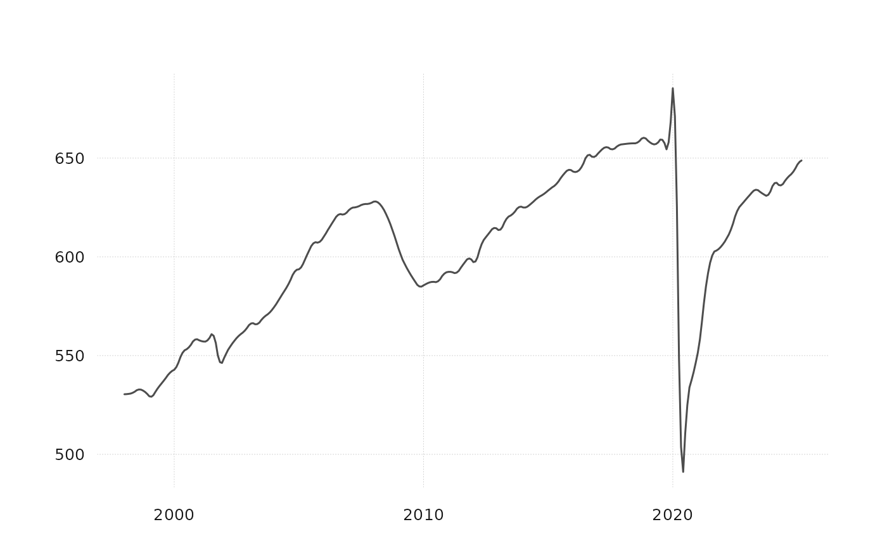

Interpolate univariate or multivariate time series from low to high frequency
disagg.RdInterpolate univariate or multivariate time series from low to high frequency
Arguments
- x
a tx-boxable object at a low frequency (e.g. annual or quarterly)
- conv_type
match the quarterly value via "first", "last", "sum", "mean"
- target_freq
target frequency "quarter" or "month"
- pattern
a single high-frequency pattern that the interpolation should follow
Details
the time-span of the high-frequency pattern has to match or be larger than the time-span of the low frequency series. NA values are not allowed.
Examples
quarterly_data_example |>
disagg(conv_type = "mean", target_freq = "month")
#> # A tibble: 306 × 31
#> time E_NF_HI ECT_HI EMN_HI EWT_HI ERT_HI E_TRADE_HI E_TU_HI ETWTANS_HI
#> <date> <dbl> <dbl> <dbl> <dbl> <dbl> <dbl> <dbl> <dbl>
#> 1 1998-01-01 530. 23.3 15.9 15.9 65.3 81.1 27.9 10.0
#> 2 1998-02-01 530. 23.3 15.9 15.9 65.2 81.1 27.9 10.0
#> 3 1998-03-01 531. 23.2 15.9 15.9 65.0 80.9 27.9 9.99
#> 4 1998-04-01 531. 23.1 15.8 15.9 64.8 80.7 27.9 9.98
#> 5 1998-05-01 531. 23.0 15.7 15.9 64.6 80.6 27.9 9.99
#> 6 1998-06-01 532. 22.9 15.7 15.9 64.4 80.4 27.8 10.0
#> 7 1998-07-01 532. 23.0 15.8 15.9 64.3 80.2 27.7 10.1
#> 8 1998-08-01 533. 23.0 15.8 15.9 64.2 80.1 27.6 10.1
#> 9 1998-09-01 533. 23.0 15.8 15.9 64.2 80.1 27.5 10.1
#> 10 1998-10-01 532. 23.1 15.8 16.0 64.2 80.3 27.4 10.1
#> # ℹ 296 more rows
#> # ℹ 22 more variables: ETWNS_HI <dbl>, EUT_HI <dbl>, EIF_HI <dbl>,
#> # EFI_HI <dbl>, E_FIR_HI <dbl>, ERE_HI <dbl>, EPS_HI <dbl>, E_PBS_HI <dbl>,
#> # E_ELSE_HI <dbl>, EMA_HI <dbl>, EAD_HI <dbl>, EED_HI <dbl>, EHC_HI <dbl>,
#> # EAF_HI <dbl>, EAFAC_HI <dbl>, EAFFD_HI <dbl>, EOS_HI <dbl>, EGV_HI <dbl>,
#> # EGVFD_HI <dbl>, EGVST_HI <dbl>, EGVSTEDNS_HI <dbl>, EGVLC_HI <dbl>
quarterly_data_example |>
disagg(conv_type = "mean", target_freq = "month") |>
tsbox::ts_long() |>
tsbox::ts_frequency(to = "quarter", aggregate = "mean") |>
tsbox::ts_wide() # this matches original data
#> # A tibble: 102 × 31
#> time E_NF_HI ECT_HI EMN_HI EWT_HI ERT_HI E_TRADE_HI E_TU_HI ETWTANS_HI
#> <date> <dbl> <dbl> <dbl> <dbl> <dbl> <dbl> <dbl> <dbl>
#> 1 1998-01-01 531. 23.3 15.9 15.9 65.2 81.0 27.9 10.0
#> 2 1998-04-01 531. 23.0 15.8 15.9 64.6 80.6 27.9 10.0
#> 3 1998-07-01 533. 23.0 15.8 15.9 64.2 80.1 27.6 10.1
#> 4 1998-10-01 531. 23.1 15.8 16.0 64.2 80.2 27.3 10.0
#> 5 1999-01-01 530. 22.8 15.8 15.8 64.1 79.8 27.0 9.70
#> 6 1999-04-01 533. 22.9 15.9 15.8 64.8 80.6 27.4 10.0
#> 7 1999-07-01 537. 22.9 16.1 15.8 65.1 81.0 27.6 10.2
#> 8 1999-10-01 541. 23.3 16.3 16.0 65.9 82.0 27.9 10.3
#> 9 2000-01-01 544. 24.3 16.3 16.2 66.0 82.3 28.0 10.4
#> 10 2000-04-01 551. 25.0 16.4 16.2 66.0 82.3 28.1 10.6
#> # ℹ 92 more rows
#> # ℹ 22 more variables: ETWNS_HI <dbl>, EUT_HI <dbl>, EIF_HI <dbl>,
#> # EFI_HI <dbl>, E_FIR_HI <dbl>, ERE_HI <dbl>, EPS_HI <dbl>, E_PBS_HI <dbl>,
#> # E_ELSE_HI <dbl>, EMA_HI <dbl>, EAD_HI <dbl>, EED_HI <dbl>, EHC_HI <dbl>,
#> # EAF_HI <dbl>, EAFAC_HI <dbl>, EAFFD_HI <dbl>, EOS_HI <dbl>, EGV_HI <dbl>,
#> # EGVFD_HI <dbl>, EGVST_HI <dbl>, EGVSTEDNS_HI <dbl>, EGVLC_HI <dbl>
# works with a single series too
quarterly_data_example |>
tsbox::ts_long() |>
tsbox::ts_pick("E_NF_HI") |>
disagg(conv_type = "mean", target_freq = "month") |>
tsbox::ts_plot()

# using a high-frequency pattern
quarterly_data_example |>
tsbox::ts_long() |>
tsbox::ts_span("2005-01-01", "2020-01-01") |>
disagg(
conv_type = "mean", target_freq = "month", pattern = monthly_data_example |>
tsbox::ts_long() |>
tsbox::ts_pick("VISNS_HI")
)
#> # A tibble: 5,490 × 3
#> id time value
#> <chr> <date> <dbl>
#> 1 E_NF_HI 2005-01-01 594.
#> 2 E_NF_HI 2005-02-01 594.
#> 3 E_NF_HI 2005-03-01 597.
#> 4 E_NF_HI 2005-04-01 599.
#> 5 E_NF_HI 2005-05-01 601.
#> 6 E_NF_HI 2005-06-01 604.
#> 7 E_NF_HI 2005-07-01 606.
#> 8 E_NF_HI 2005-08-01 607.
#> 9 E_NF_HI 2005-09-01 607.
#> 10 E_NF_HI 2005-10-01 607.
#> # ℹ 5,480 more rows
# multiple low-frequency series, same number of high-frequency patterns
purrr::map2(
quarterly_data_example |>
tsbox::ts_long() |>
tsbox::ts_pick("E_NF_HI", "ECT_HI") |>
tsbox::ts_span("2005-01-01", "2020-01-01") |>
tsbox::ts_tslist(),
monthly_data_example |>
tsbox::ts_long() |>
tsbox::ts_tslist(),
~ disagg(.x, conv_type = "mean", target_freq = "month", pattern = .y)
)
#> $E_NF_HI
#> Jan Feb Mar Apr May Jun Jul Aug
#> 2005 593.5738 594.4013 596.6349 598.5087 600.9826 603.5687 605.9319 606.9707
#> 2006 610.2488 611.7480 613.7932 615.2925 616.7793 618.8683 620.6741 621.4428
#> 2007 623.4465 624.2581 625.3154 624.9927 625.1417 625.8556 626.4415 626.8794
#> 2008 627.7850 627.9027 627.9523 626.5658 625.4017 623.8725 621.9083 619.5028
#> 2009 603.9465 600.9747 598.5889 596.4144 594.2369 592.4587 590.9630 589.1515
#> 2010 585.5052 585.9942 586.8906 587.0583 587.2063 587.4554 587.5331 587.7397
#> 2011 592.3448 592.2925 592.3527 591.7669 591.8813 593.0118 594.7446 596.0781
#> 2012 597.3096 597.4648 599.9756 603.4705 606.3016 608.7080 610.1740 611.4964
#> 2013 613.4293 613.5943 615.4564 617.4352 619.1189 620.6259 621.2486 621.9748
#> 2014 625.0215 624.7376 625.6009 626.1336 626.9342 628.2322 629.3842 629.9857
#> 2015 633.5051 634.1827 635.5722 635.6964 636.8377 638.4359 640.1714 641.2438
#> 2016 643.1674 642.6942 643.4384 643.7354 645.1859 647.6087 650.3633 651.4802
#> 2017 652.4007 653.1938 654.6655 655.1586 655.3890 655.5624 655.1007 654.4935
#> 2018 656.9356 656.8948 657.6496 657.2117 657.2849 657.8234 658.0329 657.9307
#> 2019 658.6742 657.4281 657.4177 656.3622 656.3630 657.5548 659.0891 659.6671
#> 2020 661.5288 661.6504 659.6409
#> Sep Oct Nov Dec
#> 2005 606.8674 607.0725 607.3688 608.9287
#> 2006 621.1831 621.1600 621.4646 622.7753
#> 2007 626.2391 626.5553 626.8539 627.7109
#> 2008 616.0989 613.5885 610.4772 607.6144
#> 2009 586.9755 585.6734 584.8428 585.2338
#> 2010 588.2172 590.2064 591.3167 592.4368
#> 2011 596.9973 598.6100 598.9476 599.0824
#> 2012 612.1396 613.8338 614.5191 614.7871
#> 2013 622.3866 624.2312 625.0314 625.7374
#> 2014 630.1201 631.0176 631.6236 633.1188
#> 2015 641.9447 643.3814 643.7983 644.4003
#> 2016 651.1566 650.5726 650.2999 651.5574
#> 2017 654.2659 655.5130 656.2840 657.3730
#> 2018 658.0664 659.6086 660.1244 660.3870
#> 2019 659.2638 659.9357 660.3863 661.5980
#> 2020
#>
#> $ECT_HI
#> Jan Feb Mar Apr May Jun Jul Aug
#> 2005 32.07848 32.25652 32.74500 33.27132 33.80708 34.26160 34.55856 34.77317
#> 2006 35.76257 35.90999 36.14744 36.27870 36.50599 36.86532 37.25461 37.60711
#> 2007 38.98010 39.02962 39.29028 39.47952 39.69333 39.92715 40.10530 40.21079
#> 2008 40.46946 40.29747 40.10307 39.60855 39.27580 38.98565 38.72726 38.35418
#> 2009 35.34360 34.58832 33.95808 33.30886 32.73609 32.23505 31.81491 31.35012
#> 2010 30.40565 30.37988 30.32447 30.00358 29.77615 29.59027 29.36000 29.25239
#> 2011 29.42938 29.28739 29.39323 29.56006 29.74443 29.91551 30.00137 29.98386
#> 2012 29.99512 29.99538 30.06951 29.97542 30.02093 30.12366 30.24137 30.39056
#> 2013 31.53005 31.66100 31.93896 32.07899 32.19701 32.23401 32.09729 32.02115
#> 2014 32.50283 32.50769 32.63948 32.62248 32.76874 33.00878 33.28123 33.48115
#> 2015 33.95972 33.99017 34.38011 34.80216 35.30036 35.73749 36.06430 36.46832
#> 2016 39.27063 39.40486 39.52451 39.35133 39.36444 39.45423 39.54653 39.39206
#> 2017 38.03293 37.84974 37.84733 37.69117 37.59469 37.51414 37.36042 37.14337
#> 2018 36.94066 37.00984 37.25950 37.34862 37.52463 37.68675 37.79298 37.78618
#> 2019 37.70942 37.53035 37.62023 37.55973 37.60214 37.63813 37.60210 37.52640
#> 2020 37.65576 37.52032 37.20392
#> Sep Oct Nov Dec
#> 2005 34.88828 35.15174 35.33938 35.61889
#> 2006 37.93829 38.47807 38.80098 39.03094
#> 2007 40.22391 40.38854 40.45281 40.53866
#> 2008 37.81856 37.38594 36.77444 36.14962
#> 2009 30.85497 30.52272 30.29341 30.32387
#> 2010 29.28760 29.65548 29.74161 29.73291
#> 2011 29.89477 29.87531 29.84527 29.94941
#> 2012 30.53807 30.92900 31.19075 31.45025
#> 2013 31.97156 32.19309 32.30765 32.48926
#> 2014 33.64762 33.98057 34.08603 34.17340
#> 2015 36.99738 37.84750 38.45060 39.02190
#> 2016 39.05141 38.69207 38.34810 38.21983
#> 2017 36.91621 36.86689 36.80714 36.93597
#> 2018 37.79084 37.95634 37.95976 37.96390
#> 2019 37.46150 37.68942 37.73487 37.85571
#> 2020
#>